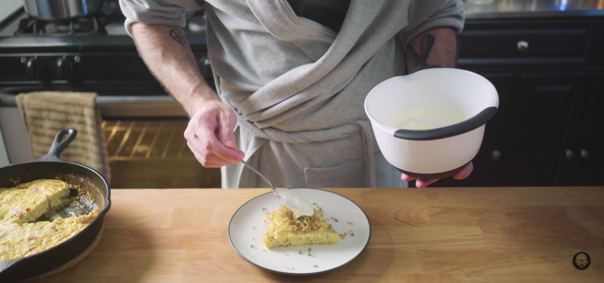

Randy's Creme Fraiche Fritata

Food Description
Fritats are a classic breakfast that are not only tasty but also easy to make. Randy Marsh's take on this adds unique flavors to the classic dish that makes it a perfect meal to have after a long stressful day or first thing in the morning.
Ingredients
Fritata Ingredients
- 1/2 Dozen Shallots
- 3 large heirloom tomatoes
- 2 Tbsp Butter
- 2 Tbsp Olive Oil
- 6 Eggs
- 1 Cup Milk
- Salt
- Pepper
- 4 Ounces Crumbled Goat Cheese
- 1 Clove Garlic
Creme Fraiche Ingredients
- 1 Pint Heavy Cream
- 2 Tbsp Buttermilk
Steps
For Fritata
- Using a mandolin, shave ½ dozen shallots into ⅛ inch slices that we’re going to seperate into little rings.
- Pour some frying oil into a pot, and heat to 250°F. Place shallots in oil and raise the temp to 350°F. Remove when blonde. Not dark brown, but blonde.
- Chop up 3 large heirloom tomatoes, scooping out the seeds in the middle before chopping into 1 inch pieces.
- In a 10-inch cast iron pan, combine butter and olive oil and turn on a medium high heat.
- In a separate bowl, combine 6 eggs, 1 cup of milk, salt, pepper, and 4 ounces of crumbled goat cheese.
- Cook one small chopped shallot and 1 clove of garlic until fragrant.
- Add heirloom tomatoes and cook until most of the liquid has evaporated or until tomatoes are soft
- Add egg and cheese mixture. Constantly run your wooden spoon across the bottom of the pan. This helps create a single curd and more tender eggs.
- Heat oven to 350°F.
- Once eggs become thick, place in the oven for 15-20 minutes, or until eggs are completely set.
- Slice yourself a piece and top with fried shallots, chopped chives and creme fraiche.
For Creme Fraiche
- Combine 1 pint of heavy cream with 2 Tbsp of buttermilk. Stirring well to combine.
- Cover container that contains the creme fraiche and let it sit out overnight.